AI Academy · Level 2 · Grade 7 · Week 9 · Student lesson
Features and Distractors
Learn to understand, design, build, test and explain AI systems responsibly.
Project: Transparent Book Recommender
Before you start
Week 8: know the target before judging a feature.
Plan time to read, investigate and explain. Keep predictions separate from observations.
Student lesson · 1 of 14
Your mission
Your learning target
I can choose recorded properties that preserve distinctions needed for a stated task.
I can show why identical feature records can hide examples with different target labels.
I can reject an answer copied into the inputs and test a proposed feature with a new case.
Remember before reading
Close your notes first. A rough first answer helps us choose the right starting point; it is not a score for your ability.
Without opening the old lesson, explain one key idea from Operational Labels. Give an example and a mistake that the idea helps you avoid.
Without opening the old lesson, explain one key idea from Debugging Strategies. Give an example and a mistake that the idea helps you avoid.
Without opening the old lesson, explain one key idea from Branching Logic. Give an example and a mistake that the idea helps you avoid.
After trying, check the relevant lesson or ask your teacher. Change the part of your explanation that the evidence shows was wrong.
Week 9: Features and Distractors
A feature should help the task and be available at decision time.
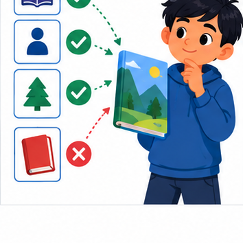
THINKER MISSION
Rank book features; reject cover color as a shortcut.
Thinker name and date:
Readiness for the connected explanation
Two annotators agree that a calendar card is ready. What must you still check before treating that label as correct?
This week’s end goal
By the end, I can test a distracting feature with controlled changes rather than confounding clues.
Student lesson · 2 of 14
Notice the evidence
PICTURE STORY
Notice → Predict → Explain
Begin with visible evidence. Do not explain more than the picture and information support.
MYSTERY
The learners must use features and distractors to solve a problem. What information do they have? What decision or calculation do they make? What would count as evidence that it worked?
Three observations (what you can point to):
My prediction and the clue supporting it:
A closer explanation
Imagine a paper sorting task for a model delivery station. Each rectangular card has a length, width, colour and card number. The station labels a card fits if its length is at most 12 centimetres and its width is at most 8 centimetres. Both limits include equality. Cards stay flat in the marked orientation; turning, bending and thickness are outside this paper task. All measurements in the first examples are known positive whole numbers.
A feature is a recorded input property, such as width in centimetres. The target label is the answer we want to produce: fits or too large under this guide. Decide what the answer means before choosing the inputs. A card number can help us find a record, but knowing its number does not tell us its dimensions.
This guide already gives us a direct rule, so we do not need to train a model to solve it. We use the task to investigate the information that either a rule or a learned model would need. Later, when relationships are learned from examples, the same question remains: did we supply the distinctions the task requires?
Student lesson · 3 of 14
See how it works
VISUAL MECHANISM
Input → Process → Output
Trace the information. At each stage, ask what changed and how you could test it.
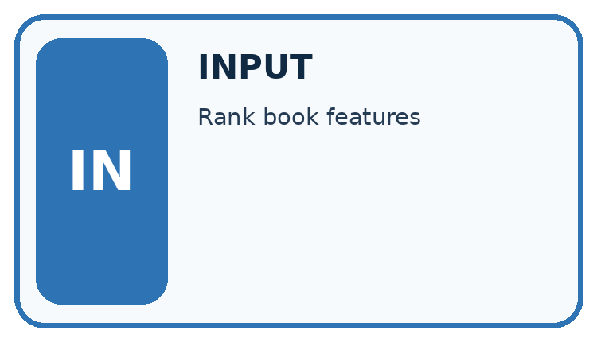
↓
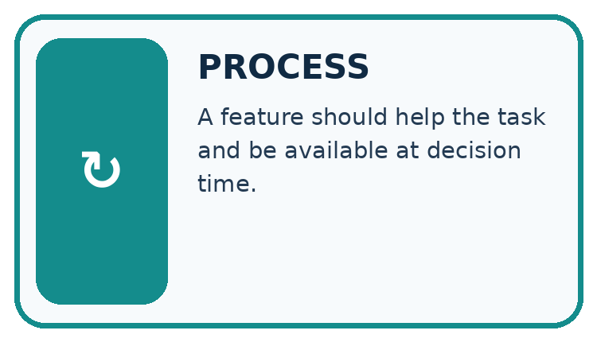
↓
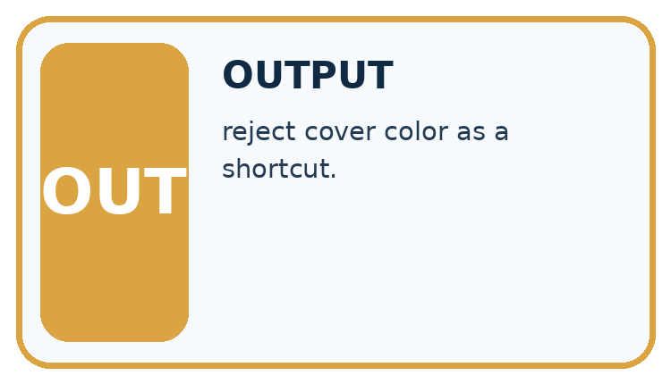
Which stage could fail even when the other two are correct? Explain:
A closer explanation
Card A is 10 centimetres long and 7 centimetres wide. Card B is 10 centimetres long and 9 centimetres wide. A fits; B is too large because its width exceeds 8. Compare two ways of recording these cards.
The same cards under two feature choices
A system receiving only the length cannot use the hidden width to tell these two cards apart. The same input, 10, is paired with two different correct answers. It may guess, return an uncertainty, or use a usual answer, but length alone cannot guarantee the right label for both. A more complicated model cannot reconstruct this missing distinction with certainty from that input alone.
A feature record needs a consistent order and units. Here we write length in centimetres first, then width in centimetres. The record 10, 7 means something different if someone silently switches the order or records millimetres. Write the definitions alongside the data.
Connect the picture and the explanation
Point to the input, the deciding step and the result in this week’s visual. Explain the same step in ordinary words. A picture helps when you can say what each part represents.
Student lesson · 4 of 14
Compare the cases
CASE GALLERY
Four Tests, Four Kinds of Evidence
A system is not understood until it survives more than one comfortable example.


NORMAL CASE: predict and name evidence. BOUNDARY CASE: predict and name evidence.


MISSING INFORMATION: predict and name evidence. TRANSFER CASE: predict and name evidence.
Which case is most likely to reveal a hidden assumption? Why?
Change one thing in the pictured case
Change: The first controlled pair yields mystery for triangle and science for circle.
Prediction: That pair is evidence of unwanted logo sensitivity.
Reason: The subject description stayed mystery; only the irrelevant logo changed.
Student lesson · 5 of 14
Words that unlock the idea
VOCABULARY LAB
Words You Can Use to Reason
A definition matters when you can recognize the idea, use it, and contrast it with a near-miss.
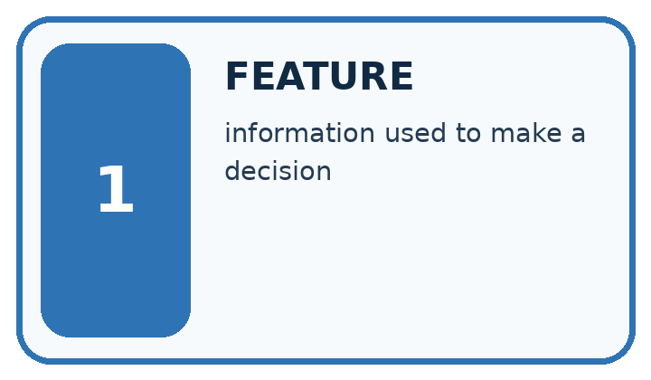
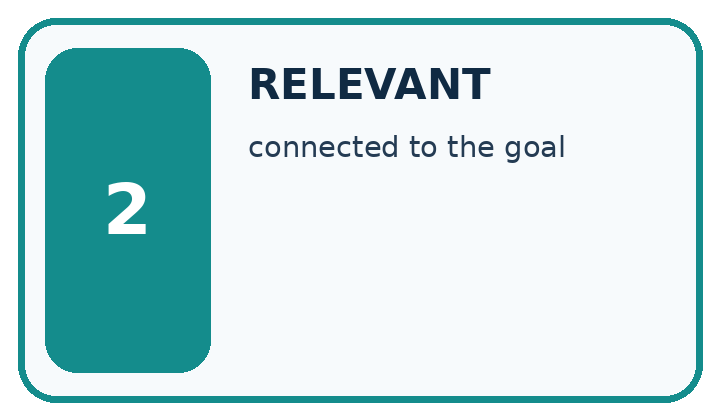
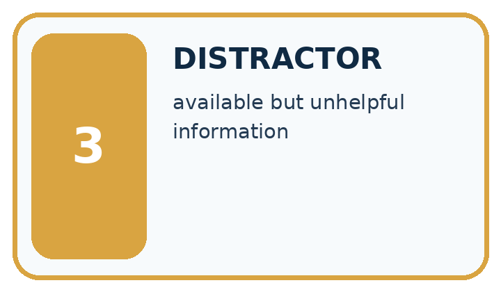
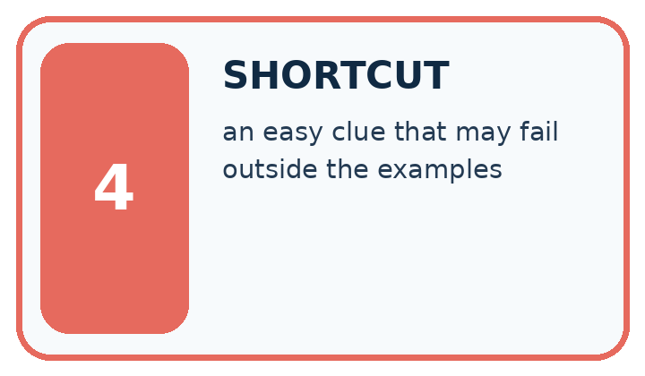
| Word | My own example | Not this / boundary |
|---|---|---|
| feature | An input attribute or representation used by a model or decision rule. | |
| relevant | Useful to the particular question, target or decision being considered. | |
| distractor | A detail that draws attention but does not help answer the current question. | |
| shortcut | A convenient but unreliable cue used instead of the relationship the task requires. |
Words used in the closer explanation
| Word | Meaning |
|---|---|
| Target label | The answer a supervised learning task asks a model to predict |
| Feature record | The selected input values for one example, in a defined order |
| Relevant feature | An input property that helps make distinctions needed for the stated task |
| Leakage | Information used during development that would not legitimately be available when making the intended prediction |
Student lesson · 6 of 14
Follow a worked example
WORKED EVIDENCE
Reason Step by Step
Predict first. Then check each step. A correct answer without visible reasoning is incomplete evidence.
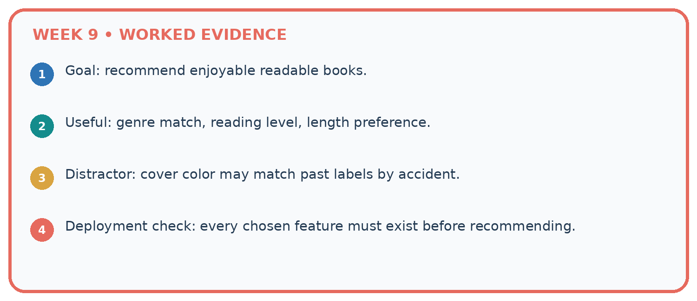
1. Goal: recommend enjoyable readable books.
2. Useful: genre match, reading level, length preference.
3. Distractor: cover color may match past labels by accident.
4. Deployment check: every chosen feature must exist before recommending.
Recalculate, retrace, or restate the reasoning in your own representation:
CHECK Did the evidence answer the exact question? Did the total, path, or source record stay consistent?
A closer explanation
| Card measurements and colour | Label under the guide | What the comparison shows |
|---|---|---|
| 10 by 7 cm and blue | Fits | Compare with the next card |
| 10 by 9 cm and blue | Too large | Same length and colour but width changes the label |
| 13 by 7 cm and blue | Too large | Same width and colour as the first card but length changes the label |
| 10 by 7 cm and red | Fits | Changing only colour does not change this guide |
The first two cards show why width matters. The first and third show why length matters. The first and fourth show that colour has no part in this particular rule. That is a statement about our task, not a claim that colour is useless for every task. For sorting red and blue cards, colour would be essential.
Suppose every fitting card in a small practice set is blue and every oversized card is red. Colour would appear to predict the labels perfectly in that set. A red 10 by 7 card and a blue 13 by 7 card expose the shortcut. Check a proposed feature on deliberately different cases before trusting the practice score.
Learn from the worked case
Cover the result before checking it. Say what is given, choose the procedure, and follow one step at a time. Then uncover the result and explain your first mismatch. Ask why a step is allowed, not only what number it produces.
A pictorial worked case: Features and Distractors
A fictional book-topic classifier sees mystery books with triangular logos and science books with circular logos.
The facts we will use
Training contains no mystery-circle or science-triangle covers.
Goal is to identify topic from actual subject information, not publisher logo. New controlled test outputs have not been supplied.

Read the picture one step at a time
Why this result follows
Either subject information or logo could explain success on the old combinations. Controlled pairs separate their predictions by changing one aspect at a time. Designing the pair is not equivalent to observing the model’s response. Keep the descriptions identical when testing logo so differences do not have two possible causes.
What this example does not establish
Controlled observations support specific sensitivity claims; they do not reveal every internal feature a learned model uses.
Student lesson · 7 of 14
Find and repair a mistake
ERROR DETECTIVE
Compare → Diagnose → Repair
Do not patch the answer. Find the earliest unsupported assumption, wrong step, or weak evidence.
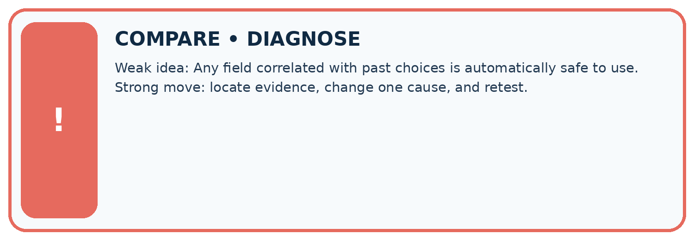
| Evidence record | Expected | Actual | Likely cause / next test |
|---|---|---|---|
| normal case | works | ||
| boundary case | stated rule | ||
| missing input | safe response | ||
| fresh transfer | generalizes |
Repair one cause. Why is this repair better than changing several things?
A closer explanation
Before adopting a feature set, state the task, name the inputs with units, and ask whether two different answers can share the same input record. Construct such a pair if you can. Then check that each input is available at the time the answer is needed. These checks can reveal a broken representation before any model is trained.
For our known measurements and fixed orientation, length and width are sufficient to apply the paper rule exactly. That does not establish whether a real parcel will fit through a real opening: thickness, shape and measurement error were excluded. If the task changes, review the features again. More columns are not automatically better; each one needs a reason to be collected and used.
Student lesson · 8 of 14
Practise together
LOGIC STUDIO
Trace Before You Run
Block code, pseudocode, tables, and diagrams are different ways to expose the same reasoning.

SET evidence_record PREDICT expected_result RUN one normal case and one boundary case COMPARE actual_result with expected_result IF different: locate first cause; change one factor; RETEST EXPLAIN result, limitation, and next safe step
Trace one input. Which line changes the state or chooses a path?
A closer explanation
After measuring a card, a teacher adds a sticker saying fits or too large. A learner proposes using sticker text as an input to predict the label before that inspection. The sticker seems excellent in the completed records because it contains the answer. But it does not exist at the time of the intended prediction. This is leakage: development has used information the real task cannot provide.
Draw a line at the moment the system must answer. On the before side, put the permitted measurements available then. On the after side, put the final label sticker. Keep labels available for teaching and checking predictions, but do not feed the sticker back in as an input for this task.
Practise with less help: Prove that one measurement is insufficient
Use workbook W2 for the connected example “Features and useful distinctions”. First fill the input and rule boxes. Try the middle steps before asking for a hint. After a hint, try the next step yourself.
| Plan | Do | Check |
|---|---|---|
| What is given? Which rule or procedure applies? | Record each intermediate step. | Does the result follow? What remains unknown? |
Explain your trace to a partner. Your partner points to one step to check. Swap roles on the next case. Each person writes their own explanation.
Check your reasoning
Use the worked case for Features and useful distinctions. Proposed explanation: “A stronger model can always recover an omitted measurement”. Decide whether this explanation is supported. Point to the step or supplied fact that decides; explain your repair if needed.
Answer on your own before discussion. If you are unsure, say which step you need help with.
Explain the picture
Does this one pair prove the classifier always ignores subject? Explain a narrower claim.
This is supported practice. Keep the separately named independent case for an attempt before feedback.
Student lesson · 9 of 14
Run the investigation
EVIDENCE LAB
Predict → Test → Record → Explain
Keep expected and actual results separate. Surprises are useful data when recorded honestly.
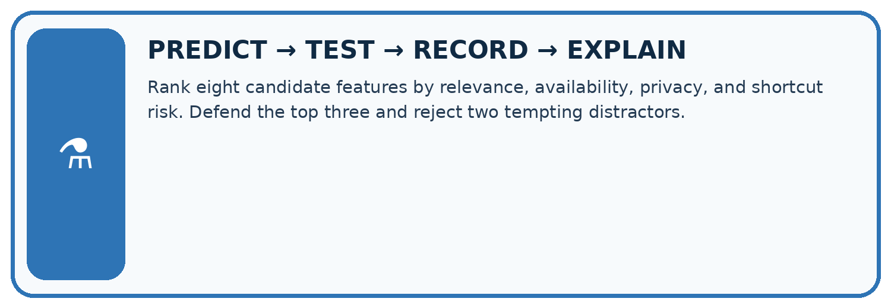
Rank eight candidate features by relevance, availability, privacy, and shortcut risk. Defend the top three and reject two tempting distractors.
| Test / input | Prediction | Actual | Evidence / calculation | Change or keep? |
|---|---|---|---|---|
| normal | ||||
| boundary | ||||
| missing | ||||
| fresh transfer |
What did the hardest test teach you that the normal test did not?
Plan → try → check
Before trying: what do I expect, and why? While trying: which step could first go wrong? Afterwards: what did I actually observe, and what should change? Keep “not run” if you only traced the procedure.
Student lesson · 10 of 14
Build your understanding
MASTERY
From Knowing the Word to Owning the Idea
Move upward only when you can produce evidence without copying the worked example.

1 • NAME: Define the concept without repeating the textbook.
2 • TRACE: Show the information, state, branch, calculation, or evidence path.
3 • APPLY: Solve a different example independently.
4 • CHALLENGE: Find a boundary case, counterexample, or unfair outcome.
5 • EXPLAIN LIMITS: Say when the result should not be trusted or used alone.
My strongest evidence of independent understanding:
Student lesson · 11 of 14
Connect your project
CUMULATIVE PROJECT
Transparent Book Recommender
Every week adds one inspectable piece. The system must show how it reached a result.
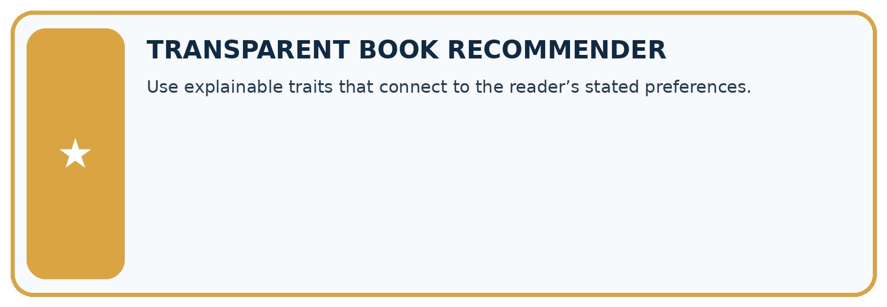
THIS WEEK’S CHECKPOINT Use explainable traits that connect to the reader’s stated preferences.
SYSTEM MAP Reader need → allowed inputs → transparent rule or score → ranked candidates → explanation → test record → human decision
What will you add, change, or verify in the project this week?
What should remain under human control?
RESPONSIBLE DESIGN Collect only necessary information. Show uncertainty and limits. Never confuse a ranking with a fact about a person.
Evidence for your project
Test recommender features for shortcuts, keeping relevant subject information separate from superficial catalogue styling.
Student lesson · 12 of 14
Show what you know
INDEPENDENT MASTERY PROOF
Explain • Transfer • Test • Defend
Complete this page without copying the worked example. Your reasoning matters more than decoration.
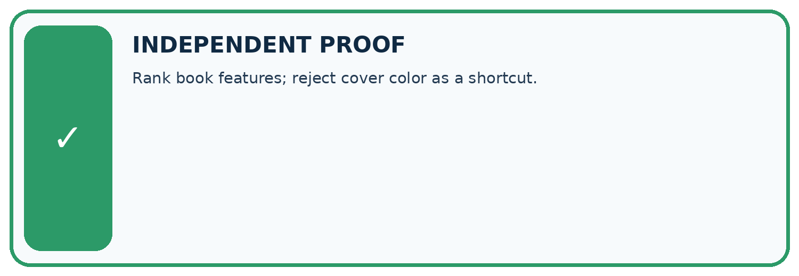
CHALLENGE Rank book features; reject cover color as a shortcut.
1. My fresh example, trace, calculation, or design:
2. My evidence that it works (include a boundary or missing-data case):
3. One limitation, fairness concern, or situation needing human review:
SELF-CHECK □ I explained the mechanism □ I used evidence □ I tested a fresh case □ I named a limitation □ I can answer ‘why?’
Student lesson · 13 of 14
Study a complete case
Week 9 Worked case
Use the supplied details to practise the weekly concept before attempting the independent question. This case extends the illustrated lesson.
The situation
Target: includes animal characters. Fields: animal tag, cover colour and shelf number.
The question
Choose useful evidence and possible distractions.
Worked explanation
An accurate animal tag directly addresses the target. Colour and shelf can produce accidental shortcuts. Test on new books.
Explain it in your own words
Which detail supports the answer, and why does it matter?
Trace the supplied case visually
Useful evidence versus a shortcut
| Evidence or stage | Value or result |
|---|---|
| Target | Contains animal characters |
| Animal tag | Relevant if accurate |
| Cover colour | Possible distraction |
| Shelf number | Possible accidental shortcut |
Target: includes animal characters. Fields: animal tag, cover colour and shelf number.
Choose useful evidence and possible distractions.
An accurate animal tag directly addresses the target. Colour and shelf can produce accidental shortcuts. Test on new books.
Student lesson · 14 of 14
Try a new case independently
Independent case: Changed independent case
Training covers show space books only on yellow backgrounds and animal books only on blue backgrounds. Design two controlled comparisons to test whether a classifier uses the intended subject.
Attempt this case before feedback. Record any help. Earlier examples below are further practice; a case already practised with feedback cannot establish fresh transfer.
Week 9 Independent application
Close the worked explanation. Apply the idea to this different question without copying.
Predict whether a book is short using page count and cover colour. Which feature directly supports the defined label? Give a counterexample to colour.
My answer, with a trace, calculation or supporting evidence
Create and test
Change one relevant detail. Predict the result before testing. Include a boundary or missing-information case when it helps reveal a limit.
My changed input and expected result
Connect to your project
Use explainable traits that connect to the reader’s stated preferences.
The evidence I will keep
Your teacher has the independent answer and scoring criteria. Complete the matching workbook week to keep your practice evidence together.
Transfer practice from the original programme
All animal books in training have green covers. How could you test whether a recommender is using subject or cover colour? Supply two diagnostic test descriptions.
Use feedback to improve
Attempt the independent case before hints. Record whether you worked alone, used a hint or followed a model. After feedback, fix the first unsupported step and explain why it changed. A later check uses a changed case, not a copied answer.